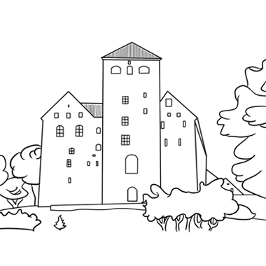

When did building of Turku Castle begin?
Around 1870
Around 1340
Around 1280
How many Universities are located in Turku?
7
4
6
What is the name of a river flowing through Turku?
Vuoksi
Niili
Aurajoki
When was The Declaration of Christmas Peace first declared in Turku?
1248
1577
1320
How many times has Turku burned in its history?
Atleast 13 times
Atleast 27 times
Atleast 31 times
When was museum ship Suomen Joutsen built?
1922
1930
1902
When was maritime museum Forum Marinum established?
1936
1977
1999
When was music festival Down By The Laituri first held in Turku?
2003
1994
1988
How many islands are there in Turku archipelago?
About 800
About 6500
About 20000
When was Turku founded?
1467
1113
1229